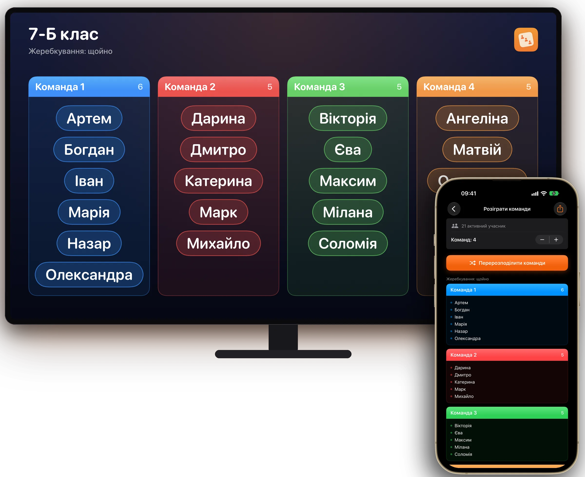
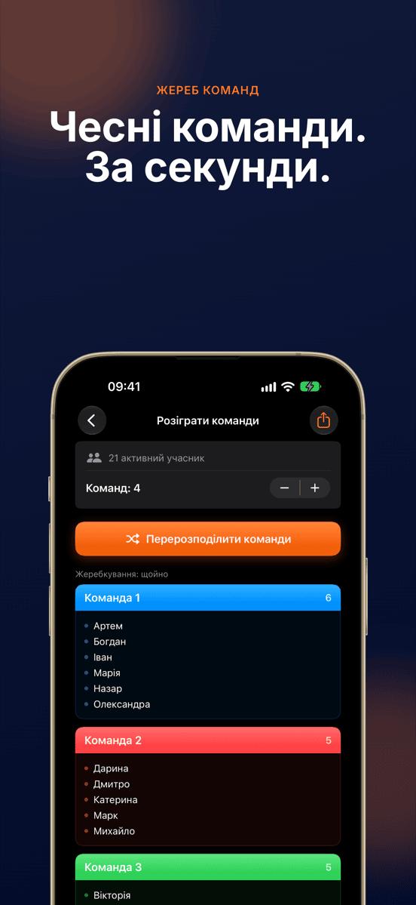
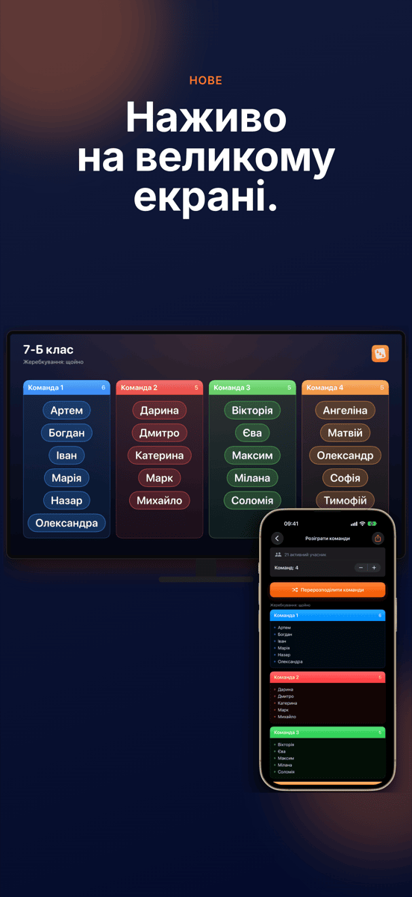
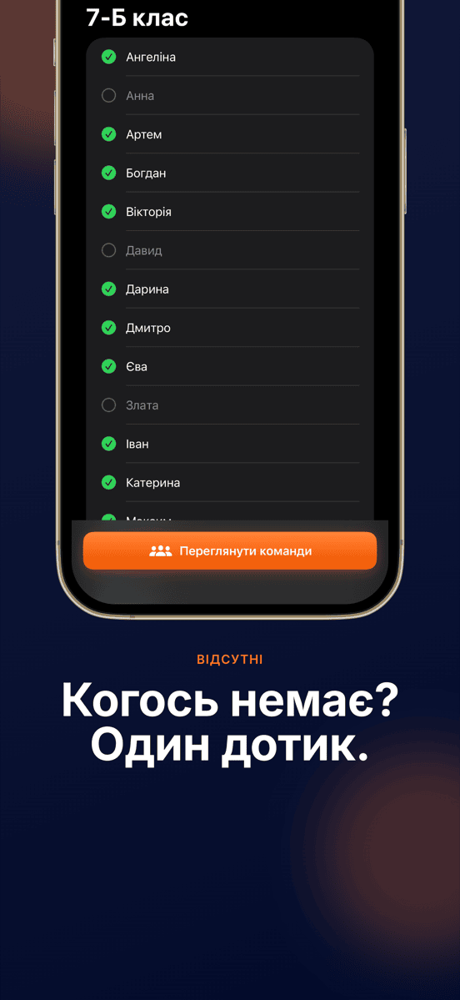
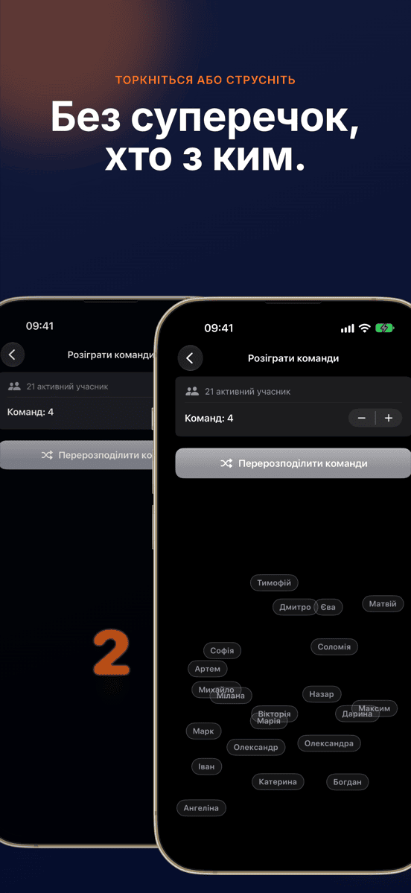
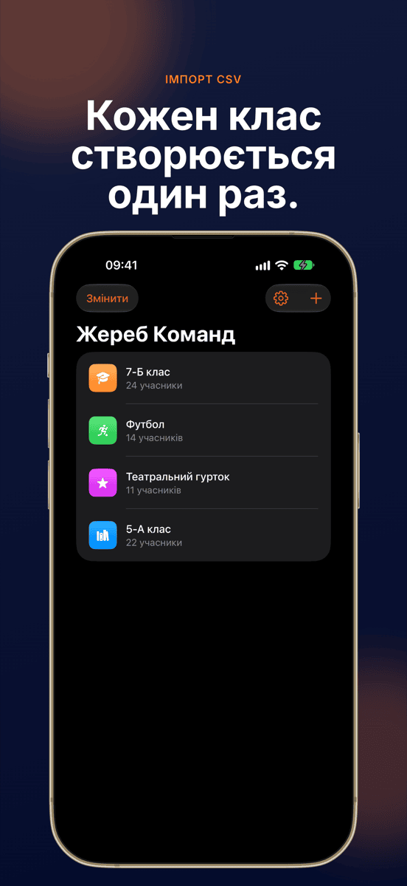
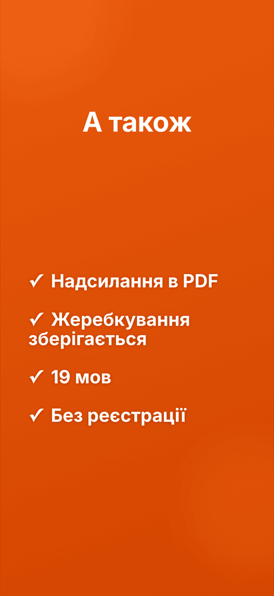

НОВЕНаживо на великому екрані
Жереб Команд
Чесні команди. За секунди.







Команди без суперечок.
Наживо на великому екрані
Через AirPlay або кабель увесь клас бачить, як складаються команди.
Один дотик, і готово
Усі розподіляються випадково й порівну між командами.
Групи зберігаються
Створіть клас, команду чи гурток один раз і проводьте жеребкування знову й знову. Кожна група пам’ятає останнє жеребкування.
Відсутній? Не бере участі
Зніміть позначку з відсутніх одним дотиком, і жеребкування їх пропустить.
Кількість команд на вибір
Пари, трійки, четвірки або більші команди.
Перемішування на очах
Анімація перемішує всі імена так, що це бачать усі. Струсніть пристрій, щоб почати новий раунд.
Ось і все.
Створіть групу
Введіть імена або імпортуйте CSV.
Зніміть відсутніх
Один дотик на кожне ім’я, якого сьогодні немає.
Жеребкування
Виберіть кількість команд, торкніться й дивіться.
Покажіть
На проєкторі або як PDF.
Посібник
Часті запитання
Як випадково поділити групу на команди?
Створіть групу один раз у застосунку Жереб Команд, додайте учасників і почніть жеребкування. Застосунок розподілить усіх випадково й порівну на вибрану кількість команд.
Для кого Жереб Команд?
Для всіх, хто часто ділить групи на команди: учителів, тренерів, ведучих воркшопів, клубів і організаторів заходів.
Чи можу я сам вибрати кількість команд?
Так. Ви самі вибираєте, скільки буде команд, від пар до великих команд, а Жереб Команд розподіляє учасників порівну.
Чи зберігаються або передаються мої дані?
Усі групи й імена лишаються тільки на вашому пристрої. Жодні дані не надсилаються на сервер.
Чи можна імпортувати списки імен з Excel?
Так. Експортуйте список у CSV з Excel або Google Таблиць та імпортуйте його в Жереб Команд. Увесь клас готовий за кілька секунд.
Чи можна показати жеребкування на проєкторі?
Так. Коли iPhone або iPad під’єднано до проєктора, Apple TV чи монітора через AirPlay або кабель, Жереб Команд показує там жеребкування наживо в горизонтальному форматі. Керуєте застосунком ви й далі на своєму пристрої.
Скільки коштує Жереб Команд?
Завантаження та перше жеребкування безкоштовні. Для наступних потрібна підписка Pro, щомісячна або щорічна, яку можна спершу спробувати безкоштовно. Жереб Команд працює на iPhone та iPad з iOS 17 або новішою.